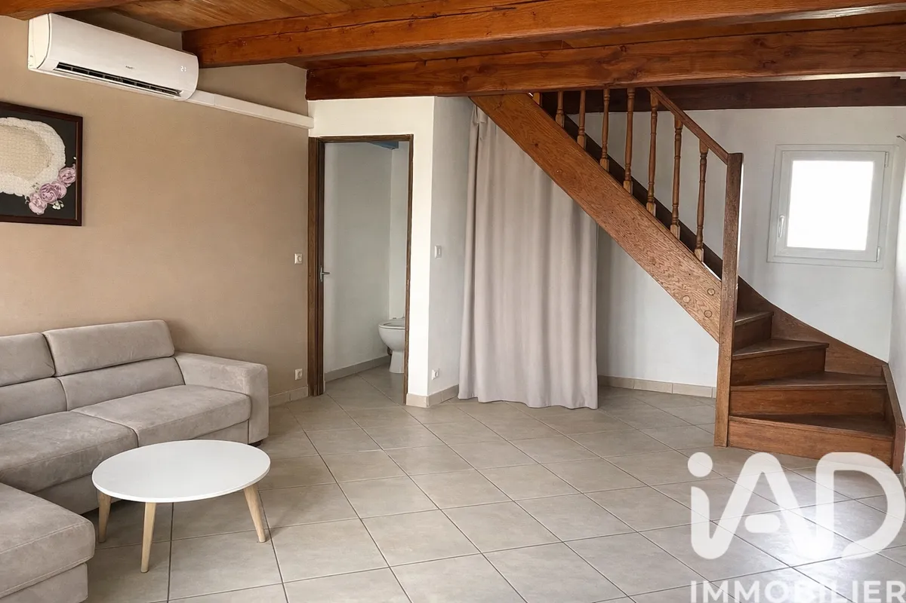

Marlène Fernandes,
conseillère ancrée
dans le Vaucluse.
Je vis dans le Vaucluse et je travaille dans le Vaucluse. Pas depuis un bureau de grande surface commerciale — depuis votre secteur, votre marché, votre réalité.
Conseillère immobilière IAD, je bénéficie des outils d'un réseau de 15 000 professionnels tout en restant entièrement indépendante. Ce modèle me permet de vous offrir des honoraires réduits sans sacrifier la qualité du service.
Ce qui me motive : trouver le juste prix de votre bien — ni trop bas pour vous léser, ni trop haut pour le bloquer. C'est une responsabilité que je prends au sérieux.

Trois engagements simples
Transparence totale
Pas de frais cachés, pas de langue de bois. Je vous explique chaque étape — le prix, les délais, les documents — pour que vous décidiez en toute connaissance de cause.
Proximité réelle
Je me déplace chez vous, au moment qui vous convient. Les rendez-vous du soir, du samedi — c'est la règle, pas l'exception. Votre projet ne s'adapte pas à mon agenda.
Confidentialité
Votre projet reste entre nous. Je ne partage jamais vos données, et toute estimation reste confidentielle jusqu'à votre décision de mettre le bien en vente.

Nord Vaucluse
et alentours
Mon secteur principal couvre Orange et les communes environnantes — avec une connaissance fine des dynamiques de chaque marché local.
Parlons de votre projet.
Un échange sans engagement pour comprendre vos besoins et vos contraintes.